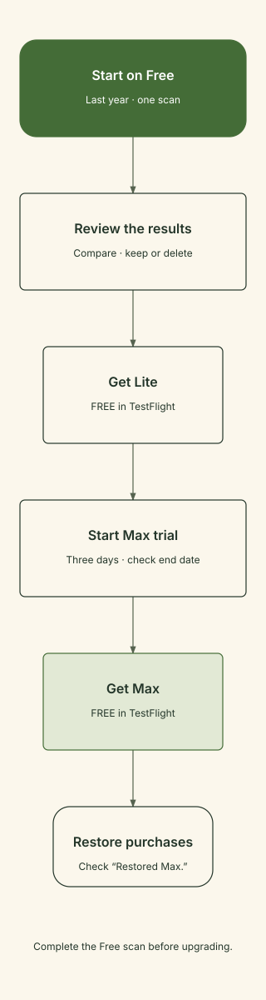

Six stages. Start on Free, finish with a restored Max purchase. Lite and Max purchases are free in TestFlight.
View the testing flow diagram

Follow along.
Tick each stage as you finish. Progress stays in this browser.
0 / 6 completed
One scan on Free
Set Scan range → Last year and Match → Normal. Tap Scan Photos once and wait for the result. Do this before buying Lite or starting the trial.
Review the results
Open a set. Tap thumbnails to compare, Zoom in for detail, and tap the large photo to change keep/delete. Use disposable photos for deletion tests; confirm Apple’s prompt only when the selection is correct.
Buy Lite — free in TestFlight
Open Upgrade / trial, scroll to Lite, and tap Get Lite. Complete the test purchase. Check Lite is unlocked and its Owned button. Try All photos and restoring skipped sets.
Start the Max trial
Reopen Upgrade / trial and tap Start free trial. Check Max and the trial end date on Home. Try Custom dates, Smart pick and Mega clean. You do not need to wait three days before the next stage.
Buy Max — free in TestFlight
During the trial, tap Get Max and complete the test purchase. Check Max is unlocked and Owned. The Max label alone is not proof of purchase because the trial already shows Max.
Restore and report
Reopen OneTake and check Max is still owned. Use Restore purchases and check Restored Max. Send TestFlight feedback with build, phone/iOS, steps, expected result and actual result.
Full step-by-step SOP
Purpose and sequence
Test the photo-review workflow and the entitlement sequence one Free scan of photos from the past year → purchased Lite → Max trial → purchased Max. Complete and review the Free scan before buying Lite or starting any trial. Then follow the purchase sequence; buying Max first prevents starting the trial.
Both Lite and Max purchases are FREE in TestFlight. Displayed prices are part of purchase testing. Use the beta installed through TestFlight. Test purchases do not carry over to the App Store release. Apple's guidance
1. Prepare
- Open TestFlight and install/update OneTake to the requested beta build.
- Record the build number, iPhone model, iOS version and test date.
- Prepare a few groups of similar, disposable photos. Use these for deletion tests.
- Start on Free, before purchasing Lite or Max or starting the trial. If the trial is unavailable, report the condition; it is stored across reinstalls.
Pass: The beta opens and the starting tier and trial eligibility are recorded.
2. Authorise photo access
- Tap Allow photo access.
- Choose Full Access for the library, or select specific photos.
- If access was denied, tap Open Settings and update the photo permission.
- With limited access, verify the app explains that only selected photos are included. Use Choose more photos to expand the selection when needed.
Pass: The home screen appears and the intended test photos are accessible.
3. Complete one Free scan of the past year
- Verify Free shows up to 3 sets and 1 scan per day. Free cleaning covers photos from the past year.
- Choose Scan range → Last year. This first scan must cover photos from the past year.
- Choose Match → Normal. Strict finds closer matches; Loose groups a broader range of same-scene shots.
- Tap Scan Photos once while still on Free, and keep the app open until the results appear. Do not buy Lite or start the trial before this scan finishes.
- Record the scanned photo count and sets found. Review the results before upgrading. If none appear, record that outcome and check permissions, date range and photo suitability; continue to Lite before running another scan.
Pass: Exactly one scan was completed on Free with Last year selected, and its result was reviewed before any upgrade. Scanning alone does not delete photos.
4. Review, keep, skip and delete
- Open a set under All.
- Tap thumbnails to browse. Tap Zoom in, then pinch or double-tap to inspect details; swipe between photos. For Live Photos, press and hold to replay motion.
- If needed, use View in All Photos (what's before and after), then close it to return.
- Check each marker: checkmark means keep; trash icon and dimming mean delete. Tap the large preview to change its selection. Thumbnail taps only change the displayed photo.
- Test Keep all → Next on one set, and Skip on another. Both retain the photos and put the reviewed set into skipped sets.
- On a disposable test set, mark only unwanted photos. Check the keeping count and Delete [number].
- Tap Delete, cancel Apple's prompt once, and verify nothing was deleted.
- Repeat Delete and confirm Apple's prompt. Verify the intended photos remain and the app advances.
- Tap Done. Reopen available results using See last results without spending another scan.
Pass: Selections are clear, cancellation preserves photos, and confirmed deletion affects the intended photos only.
5. Test purchase Lite — FREE in TestFlight
- Only after completing the Free scan of the past year and reviewing its result, open Home → settings → Upgrade / trial; alternatively tap the allowance chip.
- Do not start the trial yet. Scroll past the trial and Max cards to Lite.
- Tap Get Lite and complete Apple's test purchase confirmation.
- Check the Lite is unlocked. confirmation. Dismiss it and check Lite's button reads Owned.
- Close the upgrade screen. Verify Home shows Lite, unlimited sets and up to five scans per day, less scans already used that day.
- Choose Scan range → All photos and verify it is available.
- Open settings → Skipped sets → Show these sets again. Verify the skipped sets return to scanning. This action restores all skipped sets to review; it does not recover deleted photos.
Pass: Lite is owned; older-photo access and restoring skipped sets are unlocked.
6. Start and test the three-day Max trial
- Reopen Upgrade / trial.
- Tap Start free trial under Try Max free for 3 days.
- Verify Home shows Max and trial until [date]. Record the displayed end date.
- Choose Scan range → Custom dates, set From and To, and tap Done. Both dates are included.
- Scan the test photos and inspect the Smart pick suggestion where shown. Review it rather than assuming it is your preferred shot.
- Open results and inspect Mega clean. Read the counts and keeping rule before confirming any deletion; use only disposable photos for this test.
- If matching-duration Live sets exist, inspect Same-length Live. Equal video duration is a grouping signal, not proof of identical content.
Pass: A dated Max trial is visible and Max-only features are available.
Trial expiry expectation: Because Lite was purchased first, the app should return to Lite if the trial expires before buying Max. Record any screen that incorrectly says it will return to Free. Do not wait for expiry before the next step.
7. Test purchase Max — FREE in TestFlight
- During the active trial, reopen Upgrade / trial.
- Tap Get Max and complete Apple's test purchase confirmation.
- Check the Max is unlocked. confirmation, then dismiss it.
- Check Max's purchase button reads Owned. The Max tier label alone is insufficient because trial access already displayed Max.
- Close and reopen OneTake. Check Max remains owned and Max features remain available.
Pass: Max purchase is explicitly confirmed and its card shows Owned, independently of the active trial.
8. Restore and verify
- Open Upgrade / trial → Restore purchases.
- Complete any expected Apple test prompt and verify Restored Max.
- Check the intended kept photos remain. For accidental deletion, check Recently Deleted in Apple Photos promptly.
- Treat Freed and Can free as indicative figures, not a measurement of immediately available device storage.
Pass: Restore recognises purchased Max and retained photos are intact.
9. Report the outcome
Submit TestFlight feedback with build number, phone/iOS, starting state, exact steps, expected result, actual result and relevant screenshot/video. Record each checkpoint separately: Lite owned; trial active with end date; Max owned; Max restored; photo review/deletion correct. If purchase or trial eligibility blocks the sequence, report it rather than skipping ahead and claiming a pass.
TestFlight purchases do not transfer to the App Store release. Apple’s TestFlight guidance